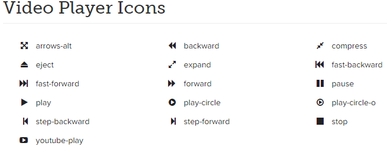
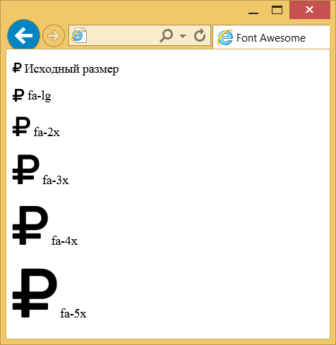
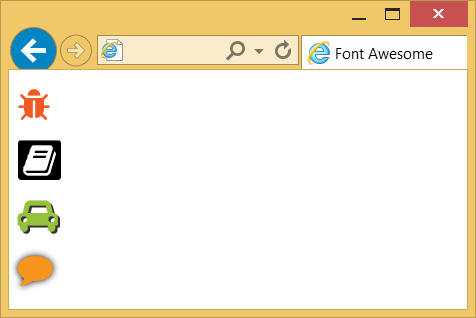
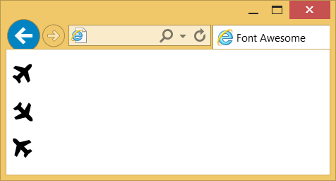
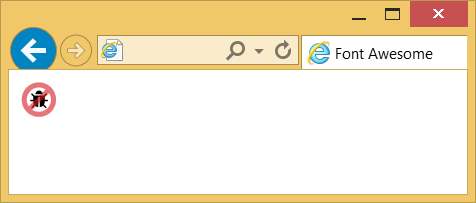

Работа с иконками
Иконки выводятся через псевдокласс ::before, поэтому к любому элементу достаточно добавить класс с именем иконки. Обычно применяется элемент <i>, но можно использовать и любой другой строчный элемент, например: <b>, <span> и др.
Для <i> указывается два основных класса — fa и fa-icon, где вместо icon пишется имя иконки. Все имена доступны на этой странице.
http://fortawesome.github.io/Font-Awesome/icons
Иконки разбиты по категориям, также есть поиск по ключевым словам (рис. 1).

Рис. 1. Иконки для видеоплеера
Чтобы добавить иконку с именем play напишем следующий код:
<i class="fa fa-play"></i>Сам элемент <i> пустой и вставляется в то место на странице, где требуется вывод иконки. Размер её совпадает с размером текущего текста.
Размеры иконок
Размер любой иконки из набора мы можем изменить с помощью свойства font-size, переопределив его в своём стиле. Также Font Awesome предлагает пять готовых размеров. Достаточно добавить дополнительный класс к элементу <i> как показано в примере 1.
Пример 1. Размер иконок
<!DOCTYPE html>
<html>
<head>
<meta charset="utf-8">
<title>Font Awesome</title>
<link rel="stylesheet" href="css/font-awesome.min.css">
</head>
<body>
<p><i class="fa fa-rouble"></i> Исходный размер</p>
<p><i class="fa fa-rouble fa-lg"></i> fa-lg</p>
<p><i class="fa fa-rouble fa-2x"></i> fa-2x</p>
<p><i class="fa fa-rouble fa-3x"></i> fa-3x</p>
<p><i class="fa fa-rouble fa-4x"></i> fa-4x</p>
<p><i class="fa fa-rouble fa-5x"></i> fa-5x</p>
</body>
</html>Результат данного примера показан на рис. 2.

Рис. 2. Размеры иконок
Цвета
Поскольку иконка это текстовый символ, то к нему применимы стилевые свойства color, background, text-shadow и другие, задающие оформление текста. В примере 2 показаны некоторые варианты изменения вида иконок.
Пример 2. Оформление иконок через стили
<!DOCTYPE html>
<html>
<head>
<meta charset="utf-8">
<title>Font Awesome</title>
<link rel="stylesheet" href="css/font-awesome.min.css">
<style>
.fa-bug { color: #f15a22; }
.fa-book {
background: #000; /* Чёрный цвет фона */
padding: 2px 5px; /* Поля */
border-radius: 3px; /* Радиус скругления */
}
.fa-car {
color: #96c13c; /* Цвет иконки */
text-shadow: 2px 2px 0 #333; /* Резкая тень под иконкой */
}
.fa-comment {
color: #f7941e; /* Цвет иконки */
text-shadow: 0 0 6px #000; /* Размытая тень */
}
</style>
</head>
<body>
<p><i class="fa fa-bug fa-2x"></i></p>
<p><i class="fa fa-book fa-2x fa-inverse"></i></p>
<p><i class="fa fa-car fa-2x"></i></p>
<p><i class="fa fa-comment fa-2x"></i></p>
</body>
</html>Результат данного примера показан на рис. 3.

Рис. 3. Цветные иконки
Font Awesome вводит специальный класс fa-inverse, изменяющий цвет иконок на белый, поэтому в стилях для иконки книжки цвет не указывается.
Поворот иконок
Иконки можно поворачивать на 90, 180 или 270 градусов по часовой стрелке, а также отражать их по горизонтали или вертикали. Для этого применяются следующие классы:
- fa-rotate-90 — поворот на 90º по часовой стрелке;
- fa-rotate-180 — поворот на 180º;
- fa-rotate-270 — поворот на 270º;
- fa-flip-horizontal — отражение по горизонтали;
- fa-flip-vertical — отражение по вертикали.
Надо учитывать, что не все иконки имеет смысл поворачивать и отражать, результат будет заметен для несимметричных иконок (пример 3).
Пример 3. Поворот и отражение иконок
<!DOCTYPE html>
<html>
<head>
<meta charset="utf-8">
<title>Font Awesome</title>
<link rel="stylesheet" href="css/font-awesome.min.css">
</head>
<body>
<p><i class="fa fa-plane fa-2x"></i></p>
<p><i class="fa fa-plane fa-rotate-90 fa-2x"></i></p>
<p><i class="fa fa-plane fa-flip-horizontal fa-2x"></i></p>
</body>
</html>Результат данного примера показан на рис. 4. Первая иконка самолёта выводится в исходном виде, вторая поворачивается на 90º, а третья отражается по горизонтали.

Рис. 4. Преобразования иконки
Анимация
Анимация обычно применяется для создания эффекта ожидания. Иконки можно заставить бесконечно вращаться по часовой стрелке двумя способами. Класс fa-spin производит плавное вращение, а fa-pulse — пошаговое вращение. Ниже показано вращение футбольного мяча.
<p><i class="fa fa-futbol-o fa-spin fa-2x"></i></p>Объединение иконок
Кроме обычного вывода иконки можно комбинировать между собой. Для этого создаём элемент <div> с классом fa-stack, а в него уже вставляем желаемые иконки. Вначале идёт нижняя, затем верхняя. К самим иконкам добавляется класс fa-stack-1x или fa-stack-2x, в зависимости от того, какая иконка должна быть больше размером. Ниже показана основная структура кода.
<div class="fa-stack">
<i class="fa fa-square fa-stack-2x"></i>
<i class="fa fa-facebook fa-stack-1x fa-inverse"></i>
</div>Для отдельных иконок мы можем задавать собственный стиль, например, цвет иконки. Тем самым получить новые цветовые решения (пример 4).
Пример 4. Комбинация иконок
<!DOCTYPE html>
<html>
<head>
<meta charset="utf-8">
<title>Font Awesome</title>
<link rel="stylesheet" href="css/font-awesome.min.css">
<style>
.fa-ban {
color: #d51920; /* Цвет */
opacity: 0.6; /* Полупрозрачность */
}
</style>
</head>
<body>
<div class="fa-stack">
<i class="fa fa-bug fa-stack-1x"></i>
<i class="fa fa-ban fa-stack-2x"></i>
</div>
</body>
</html>Результат данного примера показан на рис. 5.

Рис. 5. Комбинация иконок

Все материалы сайта доступны по лицензии Creative Commons «Attribution-NonCommercial» («Атрибуция — Некоммерческое использование») 4.0 Всемирная, если не указано иное.